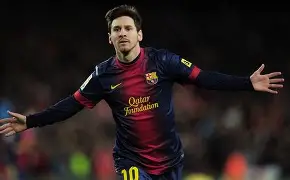
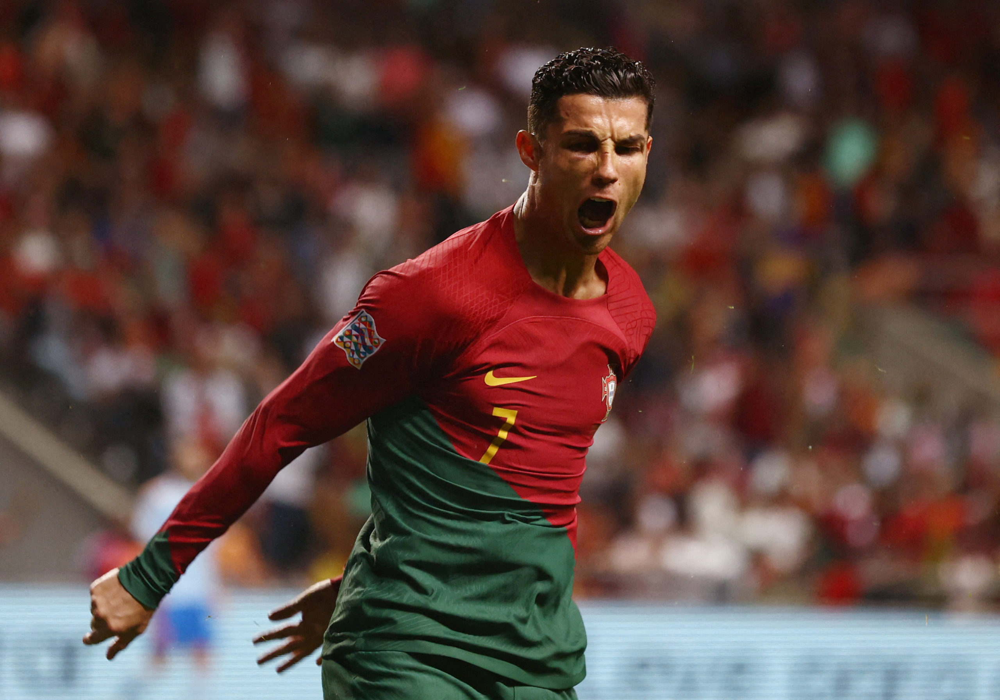
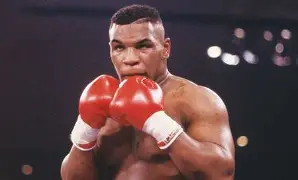
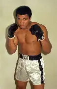
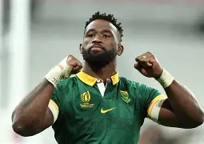
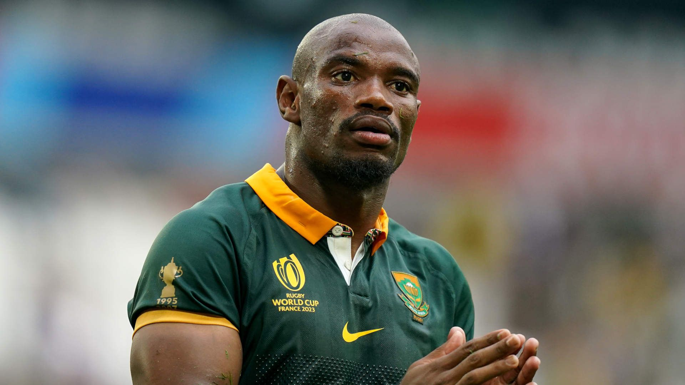

|
⚽ |

He is the reason why i started watching football from the days he was part of Barcelona F.C to now playing for Inter Miami. |

The man I hated from the start, but ended up respecting in the end, |
🥊 |

The legend himself iron mike, considered to be one of, if not the greatest boxer of all time |

Ali is one icon of man , regarded by many as the people's champion , as |
🏉 |

Siya Kolisi is the captain of the South African Rugby national squad, he is considered an icon the field of rugby |

The man i cosider my role model when it comes to playng rugby |